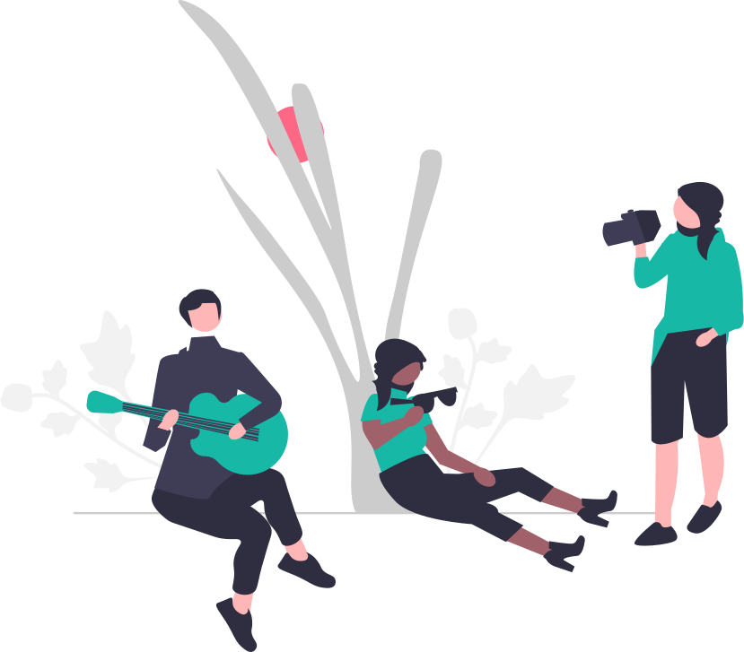
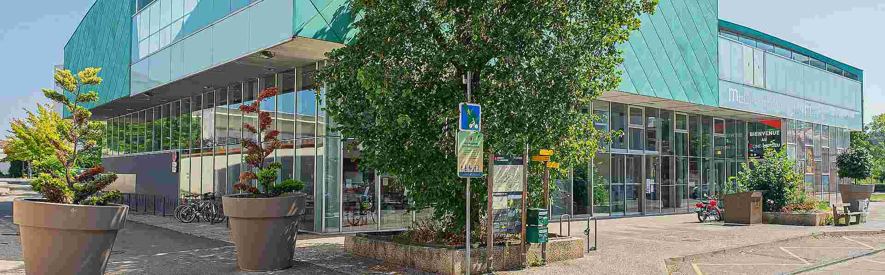

Carte Blanche 2026
C'est quoi ?
Dans le cadre de la formation au diplôme de CEM (3ème cycle), nous devons valider des 'UE', des Unités d'Enseignements. Ceux-ci permettent de valider nos compétences afin pour devenir un musicien 'indépendant'.
La Carte Blanche fait partie de l'un de ces UE. Le but est de découvrir la gestion d'un groupe, l'arrangement de morceaux, l'organisation d'une prestation... le tout à travers une restitution d'un projet monté par nos soins.
Qui ?
Quoi ?
Agathe : Spectacle d'une note tenu (à compléter)
Ambre et Capucine : Conte mis en musique (à compléter)
Arthur : Ciné-concert (à compléter)
Aminta et Coline : Show télévisé (à compléter)
Noah : À travers 4 circuits de Mario Kart, découvrez les inspirations jazz dans la musique du jeu. Jouez sur les circuits, accompagné en direct par des musiciens du conservatoire.
Quand ?

Jeudi 2 avril 2026, 19H
Mediathèque de Meyzieu ; 27 Rue Louis Saulnier, Meyzieu, 69330